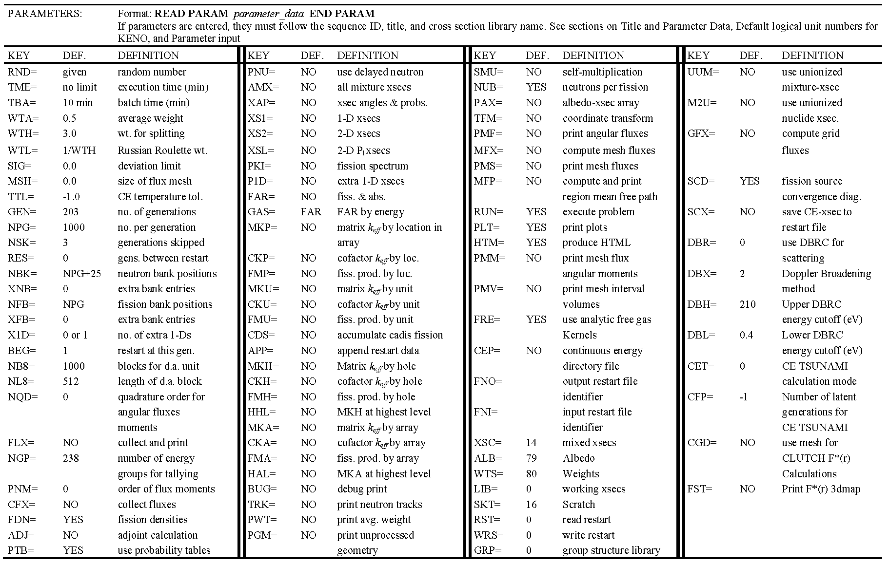
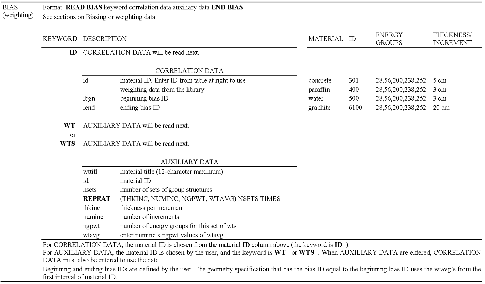

Keno: A Monte Carlo Criticality Program¶
L. M. Petrie, K. B. Bekar, C. Celik, D. F. Hollenbach,1 C. M. Perfetti, S. Goluoglu,1 N. F. Landers,1 M. E. Dunn, B. T. Rearden
KENO is a three-dimensional (3D) Monte Carlo criticality transport program developed and maintained for use as part of the SCALE Code System. It can be used as part of a sequence or as a standalone program. There are two versions of the code currently supported in SCALE. KENO V.a is the older of the two. KENO-VI contains all current KENO V.a features plus a more flexible geometry package known as the SCALE Generalized Geometry Package. The geometry package in KENO-VI is capable of modeling any volume that can be constructed using quadratic equations. In addition, such features as geometry intersections, body rotations, hexagonal and dodecahedral arrays, and array boundaries have been included to make the code more flexible.
The simpler geometry features supported by KENO V.a allow for significantly shorter execution times than KENO-VI, while the additional geometry features supported in KENO-VI make the code appropriate for cases where geometry modeling is not possible with KENO V.a. In particular, KENO-VI allows intersections, body truncations with planes, and a much wider variety of geometrical bodies. KENO-VI also has the ability to rotate bodies so that volumes no longer must be positioned parallel to a major axis. Hexagonal arrays are available in KENO-VI and dohecahedral arrays enable the code to model pebble bed reactors and other systems composed of close packed spheres. The use of array boundaries makes it possible to fill a non-cuboidal volume with an array, specifying the boundary where a particle leaves and enters the array.
Except for geometry capabilities, the two versions of KENO share most of the computational capabilities and the input flexibility specific to most SCALE modules. They can both operate in multigroup or continuous energy mode, run as standalone codes, or integrated in computational sequences such as CSAS, TSUNAMI-3D, or TRITON. Both versions of the code are continually updated and are written in FORTRAN 90.
Computational capabilities shared by the two versions of KENO include the determination of k‑effective, neutron lifetime, generation time, energy-dependent leakages, energy- and region-dependent absorptions, fissions, the system mean-free-path, the region-dependent mean-free-path, average neutron energy, flux densities, fission densities, reaction rate tallies, mesh tallies, source convergence diagnostics, problem-dependent continuous energy temperature treatments, parallel calculations, restart capabilities, and many more.
1Formerly with Oak Ridge National Laboratory
ACKNOWLEDGMENTS
Many individuals have contributed significantly to the development of KENO. Special recognition is given to G. E. Whitesides, former Director of the Computing Applications Division, who was responsible for the concept and development of the original KENO code. He has also contributed significantly to some of the techniques used in both KENO versions. The late J. T. Thomas offered many ideas that have been implemented in the code. R. M. Westfall, retired from ORNL, provided early consultation, encouragement, and benchmarks for validating the code. The special abilities of J. R. Knight, retired from ORNL, contributed substantially to debugging early versions of the code. S. W. D. Hart was instrumental in implementing continuous energy temperature treatments. W. J. Marshall has provided substantial validation and quality assurance reviews. Appreciation is expressed to C. V. Parks and S. M. Bowman for their support of KENO and the KENO3D visualization tool. The late P. B. Fox provided many of the figures in this document. D. Ilas, B. J. Marshall, and D. E. Mueller consolidated the previous KENO V.a and KENO-VI manuals into this present form. The efforts of L. F. Norris (retired), W. C. Carter (retired), S. J. Poarch, D. J. Weaver (retired), S. Y. Walker and R. B. Raney in preparing this document are gratefully acknowledged.
The authors thank the U. S. Nuclear Regulatory Commission and the DOE Nuclear Criticality Safety Program for sponsorship of the continuous energy, source convergence diagnostics, and grid geometry features in the current version.
Introduction to KENO¶
KENO, a functional module in the SCALE system, is a Monte Carlo criticality program used to calculate \(k_{eff}\), fluxes, reaction rates, and other data for three-dimensional (3-D) systems. Special features include multigroup or continuous energy mode, simplified data input, the ability to specify origins for spherical and cylindrical geometry regions, a Pn scattering treatment, and restart capability.
The KENO data input features flexibility in the order of input. The only restrictions are that the sequence identifier, title, and cross section library must be entered first. A large portion of the data has been assigned default values found to be adequate for many problems. This feature enables the user to run a problem with a minimum of input data.
In addition to the features listed above, KENO-VI uses the SCALE Generalized Geometry Package (SGGP), which contains a much larger set of geometrical bodies, including cuboids, cylinders, spheres, cones, dodecahedrons, elliptical cylinders, ellipsoids, hoppers, parallelepipeds, planes, rhomboids, and wedges. The code’s flexibility is increased by allowing: intersecting geometry regions; hexagonal, dodecahedral, and cuboidal arrays; bodies and holes rotated to any angle and translated to any position; and a specified array boundary that contains only that portion of the array located inside the boundary. Users should be aware that the added geometry features in KENO‑VI can result in significantly longer run times than KENO V.a. A KENO-VI problem that can be modeled in KENO V.a will typically run about four times as long with KENO-VI as it does with KENO V.a. Therefore KENO-VI is not a replacement for KENO V.a, but rather an additional version for more complex geometries that could not be modeled previously.
Blocks of input data are entered in the form
READ XXXX input_data END XXXX,
where XXXX is the keyword for the type of data being entered. The types of data entered include parameters, geometry region data, array definition data, biasing or weighting data, albedo boundary conditions, starting distribution information, the cross section mixing table, extra one-dimensional (1-D) (reaction rate) cross section IDs for special applications, energy group boundaries for tallying in the continuous energy mode, a mesh grid for collecting flux moments, and printer plot information.
A block of data can be omitted unless it is needed or desired for the problem. Within the blocks of data, most of the input is activated by using keywords to override default values.
The treatment of the energy variable can be either multigroup or continuous. Changing the calculation mode from multigroup to continuous energy or vice versa is established by simply changing the cross section library used. All available calculated entities in the multigroup mode can also be calculated in the continuous energy mode. If the calculated entity is energy or group dependent, it is automatically tallied into the appropriate group structure in the continuous energy mode.
The KENO V.a geometry input consists of spheres, hemispheres, cylinders, hemicylinders, and cuboids. Although the origin of the cylinders, hemicylinders, spheres, and hemispheres is zero by default, they may be specified to any value that will allow the geometry to fit in the problem. This feature allows the use of nonconcentric cylindrical and spherical shapes and provides a great deal of freedom in positioning them. Another feature that expands the generality of the code is the ability to place the cut surface of the hemicylinders and hemispheres at any distance between the radius and the origin.
An additional convenience is the availability of an alternative method for specifying the array definition unit-location data. This method uses FIDO-like options for filling the array.
As mentioned above, KENO-VI uses the SGGP, which contains a much more flexible geometry package than the one in KENO V.a. In KENO-VI, geometry regions are constructed and processed as sets of quadratic equations. A set of geometric shapes (including all of those used in KENO V.a plus others) is available in KENO-VI, as well as the ability to build more complex geometric shapes using sets of quadratic equations. Unlike KENO V.a, KENO-VI allows intersections between geometry regions within a unit, and it provides the ability to specify an array boundary that intersects the array.
The most flexible KENO V.a geometry features are the “ARRAY-of-ARRAYs” and “HOLEs” capabilities. The ARRAY-of-ARRAYs option allows the construction of ARRAYs from other ARRAYs. The depth of nesting is limited only by computer space restrictions. This option greatly simplifies the setup for ARRAYs involving different UNITs at different spacings. The HOLE option allows a UNIT or an ARRAY to be placed at any desired location within a geometry region. The emplaced UNIT or ARRAY cannot intersect any geometry region and must be wholly contained within a region. As many HOLEs as will snugly fit without intersecting can be placed in a region. This option is especially useful for describing shipping casks and reflectors that have gaps or other geometrical features. Any number of HOLEs can be described in a problem, and HOLEs can be nested to any depth.
The primary difference between the KENO V.a and KENO-VI geometry input is the methodology used to represent the geometry/material regions in a unit. KENO-VI uses two geometry records (cards) to describe a region. The first record, called the GEOMETRY record, contains the geometry (shape) keyword, region boundary definitions, and any geometry modification data. Using geometry modification data, regions can be rotated and translated to any angle and position within a unit. The second record, the CONTENT record, contains the MEDIA keyword; the material, HOLE, or ARRAY ID number; the bias ID number; and the region definition vector. KENO-VI requires that a GLOBAL UNIT be specified in all problems, including single unit problems.
In addition to the cuboidal ARRAYs available in KENO V.a, hexagonal ARRAYs and dodecahedral ARRAYs can be directly constructed in KENO-VI. Also, the ability to specify an ARRAY boundary that intersects the ARRAY makes it possible to construct a lattice in a cylinder using one ARRAY in KENO-VI instead of multiple ARRAYs and HOLEs as would be required in KENO V.a.
Anisotropic scattering is treated by using discrete scattering angles. The angles and associated probabilities are generated in a manner that preserves the moments of the angular scattering distribution for the selected group-to-group transfer. These moments can be derived from the coefficients of a Pn Legendre polynomial expansion. All moments through the 2n − 1 moment are preserved for n discrete scattering angles. A one-to-one correspondence exists such that n Legendre coefficients yield n moments. The cases of zero and one scattering angle are treated in a special manner. Even when the user specifies multiple scattering angles, KENO can recognize that the distribution is isotropic, and therefore KENO selects from a continuous isotropic distribution. If the user specifies one scattering angle, the code selects the scattering angle from a linear function if it is positive between -1 and +1, and otherwise it performs semicontinuous scattering by picking scattering angle cosines uniformly over some range between –1 and +1. The probability is zero over the rest of the range.
The KENO restart option is easy to activate. Certain changes can be made when a problem is restarted, including using a different random sequence or turning off certain print options such as fluxes or the fissions and absorptions by region.
KENO can also compute angular fluxes and flux moments in multigroup calculations, which are required to compute scattering terms for generation of sensitivity coefficients with the SAMS module or the TSUNAMI-3D control module. Fluxes can also be accumulated in a Cartesian mesh that is superimposed over the user-defined geometry in an automated manner.
KENO can perform Monte Carlo transport calculations concurrently on a number of computational nodes. By introducing a simple master-slave approach via MPI, KENO runs different random walks concurrently on the replicated geometry within the same generation. Fission source and other tallied quantities are gathered at the end of each generation by the master process and are then processed either for final edits or subsequent generations. Code parallel performance is strongly dependent on the size of the problem simulated and the size of the tallied quantities.
KENO Data Guide¶
KENO may be run stand alone or as part of a SCALE criticality safety or sensitivity and uncertainty analysis sequence. If KENO is run stand alone in the multigroup mode, cross section data can be used from an AMPX [2]_ working format library or from a Monte Carlo format cross section library. If KENO uses an AMPX working format library, a mixing table data block must be entered. If a Monte Carlo format library is used, a mixing table data block is not entered, and the mixtures specified in the KENO geometry description must be consistent with the mixtures created on the Monte Carlo format library file.
If KENO is run stand alone in the continuous energy mode, a mixing table data block must be provided unless the restart option is used.
If KENO is run as part of a SCALE criticality safety or sensitivity and uncertainty analysis sequence, the mixtures are defined in the CSAS or TSUNAMI-3D input, and a mixing table data block cannot be entered in KENO. Furthermore, the mixture numbers used in the KENO geometry description must correspond to those defined in the composition data block of the CSAS or TSUNAMI-3D input. To use a cell-weighted mixture in KENO, the keyword “CELLMIX=,” followed by a unique mixture number, must be specified in the unit cell data of the CSAS or TSUNAMI‑3D sequence. Unit cell data are applicable only in the multigroup mode. The mixture number used in the KENO input is the unique mixture number immediately following the keyword “CELLMIX=.” A cell‑weighted mixture is available only in SCALE sequences that use XSDRN to perform a cell-weighting calculation using a multigroup cross section library. Table 30 through Table 43 summarize the KENO input data blocks. These input data blocks are discussed in detail in the following sections.
In order to run KENO parallel (standalone execution), the user must provide a name with the “%” prefix in the input file (=%kenovi). Control modules like CSAS, TRITON, and TSUNAMI-3D automatically initiate parallel KENO execution if the user provides the required arguments while running this code.
|  |

|
|  |
 |
 |
 |
 |
 |
 |
ENERGY |
Format: READ ENERGY energy group boundaries END ENERGY Enter upper energy boundary for each group in eV. The last entry is the lower energy boundary of the last group. For N groups, there are N+1 entries. Entries must be in descending order and in units of eV. |
Keno input outline¶
The data input for KENO is outlined below. Default data for KENO have been found to be adequate for many problems. These values should be carefully considered when entering data.
Blocks of input data are entered in the form:
READ XXXX input_data END XXXX
where XXXX is the keyword for the type of data being entered. The keywords that can be used are listed in Table 8.1.15. A minimum of four characters is required for a keyword, and some keyword names may be as long as twelve characters (READ PARAMETER, READ GEOMETRY, etc.). Keyword inputs are not case sensitive. Data input is activated by entering the words READ XXXX followed by one or more blanks. All input data pertinent to XXXX are then entered. Data for XXXX are terminated by entering END XXXX followed by two or more blanks. Note that multiple READ GRID blocks are used if multiple grid definitions are needed.
Type of data |
First four characters |
Parameters |
PARA or PARM |
Geometry |
GEOM |
Biasing |
BIAS |
Boundary conditions |
BOUN or BNDS |
Start |
STAR or STRT |
Energy |
ENER |
Array (unit orientation) |
ARRA |
Extra 1-D cross sections |
X1DS |
Cross section mixing tablea |
MIXT or MIX |
Plota |
PLOT or PLT or PICT |
Volumes |
VOLU |
Grid geometry |
GRID |
Reactions |
REAC |
a MIX and PLT must include a trailing blank, which is considered part of the keyword. |
Three data records must be entered for every problem: first the SCALE sequence identifier, then the problem title, and then the END DATA to terminate the problem.
(1) KENO is typically run using one of the SCALE CSAS or TSUNAMI sequences, but it may also be run stand alone using KENO V.a or KENO-VI. The sequence identifier is specified using one line similar to:
=kenovi
This line may also include additional runtime directives that are described throughout the SCALE manual. For example:
=kenova parm=check
The following guidance generally assumes the user is running KENO stand alone. If KENO is to be run using of the other sequences (e.g., CSAS5), see the appropriate manual section for additional guidance.
problem title
Enter a problem title (limit 80 characters, including blanks; extra characters will be discarded). A title must be entered. See Sect. 8.1.2.3.
READ PARA parameter_data END PARA
Enter parameter input as needed to describe a problem. If parameter data are desired in standalone KENO calculations (i.e., non-CSAS), they must immediately follow the problem title. Default values are assigned to all parameters. A problem can be run without entering any parameter data if the default values are acceptable.
Parameter data must begin with the words READ PARA, READ PARM, or READ PARAMETER. Parameter data may be entered in any order. If a parameter is entered more than once, the last value is used. The words END PARA or END PARM, or END PARAMETER terminate the parameter data. See Sect. 8.1.2.3.
(n1)…( n13) The following data may be entered in any order. Data not needed to describe the problem may be omitted.
(n1) READ GEOM all_geometry_region_data END GEOM
Geometry region data must be entered for every problem that is not a restart problem. Geometry data must begin with the words READ GEOM or READ GEOMETRY. The words END GEOM or END GEOMETRY terminate the geometry region data. See Sect. 8.1.2.4.
(n2) READ ARRA array_definition_data END ARRA
Enter array definition data as needed to describe the problem. Array definition data define the array size and position units (defined in the geometry data) in a 3-D lattice that represents the physical problem being analyzed. Array data must begin with the words READ ARRA or READ ARRAY and must terminate with the words END ARRA or END ARRAY. See Sect. 8.1.2.5.
(n4) READ BOUN albedo_boundary_conditions END BOUN
Enter albedo boundary conditions as needed to describe the problem. Albedo data must begin with the words READ BOUN, READ BNDS, READ BOUND, or READ BOUNDS, and it must terminate with the words END BOUN, ENDS BNDS, END BOUND, or END BOUNDS. See Sect. 8.1.2.6.
(n3) READ BIAS biasing_information END BIAS
The biasing_information is used to define the weight given to a neutron surviving Russian roulette. Biasing data must begin with the words READ BIAS. The words END BIAS terminate the biasing data. See Sect. 8.1.2.7.
(n5) READ STAR starting_distribution_information END STAR
Enter starting information data for starting the initial source neutrons only if a uniform starting distribution is undesirable. Start data must begin with the words READ STAR, READ STRT or READ START, and it must terminate with the words END STAR, END STRT or END START. See Sect. 8.1.2.8.
(n6) READ ENER energy_group_boundaries END ENER
Enter upper energy boundaries for each neutron energy group to be used for tallying in the continuous energy mode. Energy bin data begin with the words READ ENER or READ ENERGY and terminate with the words END ENER or END ENERGY. The last entry is the lower energy boundary of the last group. The values must be in descending order. This block is only applicable to continuous energy KENO calculations. See Sect. 8.1.2.12.
(n7) READ MIXT cross_section_mixing_table END MIXT
Enter a mixing table to define all the mixtures to be used in the problem. The mixing table must begin with the words READ MIXT or READ MIX and must end with the words END MIXT or END MIX. Do not enter mixing table data if KENO is being executed as a part of a SCALE sequence. See Sect. 8.1.2.10.
(n8) READ X1DS extra_1-D_cross_section_IDs END X1DS
Enter the IDs of any extra 1-D cross sections to be used in the problem. These must be available on the mixture cross section library. Extra 1-D cross section data must begin with the words READ X1DS and terminate with the words END X1DS. See Sect. 8.1.2.9.
(n9) READ PLOT plot_data END PLOT
Enter the data needed to provide a 2-D character or color plot of a slice through a specified portion of the 3-D geometrical representation of the problem. Plot data must begin with the words READ PLOT, READ PLT, or READ PICT and terminate with the words END PLOT, END PLT, or END PICT. See Sect. 8.1.2.11.
(n10) READ VOLU volume_data END VOLU
Enter the data needed to specify the volumes of the geometry data. Volume data must begin with the words READ VOLU or READ VOLUME and end with the words END VOLU or END VOLUME. See Sect.Volume data.
(n11) READ GRID mesh_grid_data END GRID
Enter the data needed to specify a simple Cartesian grid over either the entire problem or part of the problem geometry for tallying fluxes, moments, fission sources, etc. Grid data may be entered using the keywords READ GRID, READ GRIDGEOM, or READ GRIDGEOMETRY, and they are terminated with either END GRID, END GRIDGEOM, or END GRIDGEOMETRY. Multiple grids may be defined by repeating the READ GRID block several times, specifying a different mesh grid identification number for each so defined grid. See Sect. Grid geometry data for further information.
(n12) READ REAC reaction_data END REAC
Enter the data needed to specify filters for the reaction tally calculations. Reaction data must begin with the words READ REAC and terminate with END REAC. This block is only applicable to calculations in the continuous energy mode. See Sect.8.1.2.15.
(n13) END DATA must be entered
Terminate the data for the problem.
Procedure for data input¶
For a standalone KENO problem, the first data records must be the sequence identifier (e.g., =kenovi or =kenova) and the title. The next block of data must be the parameters if they are to be entered. A problem can be run without entering the parameters, which causes KENO to use default values for input parameters. The remaining blocks of data can be entered in any order.
BOLD TYPE specifies keywords. A keyword is used to identify the data that follow it. When a keyword is used, it must be entered exactly as shown in the data guide. All keywords except those ending with an equal sign must be followed by at least one blank.
small_italics correlate data with a program variable name. The actual values are entered in place of the program variable name and are terminated by a blank or a comma.
CAPITAL ITALICS identify general data items. General data items are general classes of data including
(1) geometry data such as UNIT INITIALIZATION and UNIT NUMBER DEFINITION, GEOMETRY REGION DESCRIPTION, GEOMETRY WORD, MIXTURE NUMBER, BIAS ID, and REGION DIMENSIONS,
albedo data such as FACE CODES and ALBEDO NAMES,
weighting data such as BIAS ID NUMBERS, etc.
Square brackets The square brackets, [ and ], are used to show that an entry is optional.
Broken line The broken line, |, is used as a logical “or” symbol to show that the entries to its left and right are alternatives that cannot be used simultaneously.
Title and parameter data¶
A title, a character string, must be entered at the top of the input file. The syntax is:
title a string of characters with a length of up to 80 characters, including blanks.
The PARAMETER block may contain parameter initializations for those parameters that need to be changed from their default value. The syntax for the PARAMETER block is:
READ PARA[METER] p1 … pN END PARA[METER]
or
READ PARM p1 … pN END PARM
p1 … pN are N (N greater than or equal to zero) keyworded parameters that together make up the PARAMETER DATA
The commonly changed parameters are TME, GEN, NSK, and NPG. Seldom changed parameters are NBK, NFB, XNB, XFB, WTH, WTL, TBA, BUG, TRK, and LNG.
The PARAMETER DATA, p1 … pN, consists of one or more of the parameters described below.
Floating point parameters
RND = rndnum input hexadecimal random number, a default value is provided.
TME = tmax execution time (in minutes) for the problem, default = 0.0 (no limit).
TBA = tbtch time allotted for each generation (in minutes), default = 10 minutes. If tbtch is exceeded in any generation, the problem is assumed to be looping. Execution is terminated, and final edits are performed. The problem can loop indefinitely on a computer if the system-dependent routine to interrupt the problem (PULL) is not functional. TBA= is also used to set the amount of time available for generating the initial starting points.
SIG = tsigma if entered and > 0.0, this is the standard deviation at which the problem will terminate, default = 0.0, which means do not check sigma.
WTA = dwtav the default average weight given a neutron that survives Russian roulette, dwtav default = 0.5.
WTH = wthigh the default value of wthigh is 3.0 and should be changed only if the user has a valid reason to do so. The weight at which splitting occurs is defined to be wthigh x wtavg, where wtavg is the weight given to a neutron that survives Russian roulette.
WTL = wtlow Russian roulette is played when the weight of a neutron is less than wtlow x wtavg. The wtlow default = 1.0/wthigh.
Note
The default values of wthigh and wtlow have been determined to minimize the deviation per unit running time for many problems.
MSH = mesh_size Length (cm) of one side of a cubic mesh for tallying fluxes. Default = 0.0. A positive non-zero value must be entered if MFX=YES and READ GRID input is not entered.
TTL = temperature_tolerance The continuous energy cross sections must be within the temperature_tolerance (in degrees Kelvin) of the requested temperature for the problem to run. A negative value specifies the use of the closest temperature to that requested. TTL is ignored when DBX is nonzero. The default = -1.0.
DBH = dbrc_high the energy cutoff (in eV) up to which the Doppler Broadening Rejection Correction (DBRC) method will be used on nuclides for which DBRC is enabled, and cross section libraries are available. DBH is only used in CE simulations. Default = 210.0 eV.
DBL = dbrc_low the energy cutoff (in eV) down to which DBRC will be used on nuclides for which DBRC is enabled and cross section libraries are available. Only used in CE simulations. Default = 0.4 eV.
Integer parameters
GEN = nba number of generations to be run, default = 203.
NPG = npb number of neutrons per generation, default = 1000.
NSK = nskip number of generations (1 through nskip) to be omitted when collecting results, default = 3.
RES = nrstrt number of generations between writing restart data, default = 0. If RES is zero, restart data are not written. When restarting a problem, RES is defaulted to the value that was used when the restart data block was written. Thus, it must be entered as zero to terminate writing restart data for a restarted problem.
NBK = nbank number of positions in the neutron bank, default = npb + 25.
XNB = nxnbk number of extra entries in the neutron bank, default = 0.
NFB = nfbnk number of positions in the fission bank, default = npb.
XFB = nxfbk number of extra entries in the fission bank, default = 0.
X1D = numx1d number of extra 1-D cross sections, default = 0.
BEG = nbas beginning generation number, default = 1. If BEG is greater than 1, restart data must be available. BEG must be 1 greater than the number of generations retrieved from the restart file.
NB8 = nb8 number of blocks allocated for the first direct-access unit, default = 1000.
NL8 = nl8 length of blocks allocated for the first direct-access unit, default = 512.
NQD = nquad quadrature order for angular flux tallies, default = 0, which means do not collect. Angular fluxes are typically only needed for TSUNAMI-3D calculations.
NGP = ngp number of neutron energy groups to be used for tallying in the continuous energy mode. If NGP corresponds to a standard SCALE group structure, then the SCALE group structure will be used. If it does not correspond to a standard structure, an equally spaced in lethargy group structure will be used. If nothing is specified for a continuous energy problem, the SCALE 238 group structure will be used.
PNM = isctr highest order of flux moment tallies, default = 0. Flux moments are typically only tallied for TSUNAMI-3D calculations.
CET = ce_tsunami_mode. mode for CE TSUNAMI (See TSUNAMI-3D manual).
0 = No sensitivity calculations
1 = CLUTCH sensitivity calculation
2 = IFP sensitivity calculation
4 = GEAR-MC calculation (with CLUTCH only)
5 = GEAR-MC calculation (with CLUTCH+IFP)
7 = Undersampling metric calculation
CFP = number_of_latent_generations
number of latent generations used for IFP sensitivity or \(F^{*}\left( r \right)\) calculations. Note:
If CET=1 and CFP= -1 then \(F^{*}\left( r \right)\) is assumed to equal one everywhere.
If CET=4 and CFP= -1 then \(F^{*}\left( r \right)\) is assumed to equal zero everywhere.
DBR = lusedbrc use Doppler Broadening Rejection Correction method. See Sect. 8.1.6.2.9 for more details. Only used in CE simulations. Default = 2.
0 = No DBRC
1 = DBRC for 238U only
2 = DBRC for all available nuclides (232Th, 234U, 235U, 236U, 238U, 237Np, 239Pu, 240Pu)
DBX = db_xs_mode
option for performing problem-dependent or on-the-fly Doppler Broadening. See Sect. 8.1.6.2.10 for more details. Default = 2.
0 = No problem-dependent or on-the-fly Doppler Broadening
1 = Perform problem-dependent Doppler Broadening for 1D cross sections only.
2 = Perform problem-dependent Doppler Broadening for both 1D and 2D (thermal scattering data) cross sections.
Alphanumeric parameter data
CEP = lcep key for choosing the calculation mode in stand alone KENO calculations. The parameter is set to the appropriate value by the calling sequence if not stand alone KENO. For stand alone KENO, enter NO for multigroup mode, or enter the continuous energy directory filename for the continuous energy mode. The directory file is the file containing pointers to files significant for the continuous energy run.
FNI = mode_in extra field in the input restart file name [restart_*mode_in*.keno_input] and [restart_*mode_in*.keno_calculated]. The default is an empty field.
FNO = mode_out extra field in the output restart filename [restart_*mode_out*.keno_input] and [restart_*mode_out*.keno_calculated]. The default is an empty field.
Logical parameter data … enter YES or NO
APP = lappend key for appending the restart data, default = NO.
FLX = nflx key for collecting and printing fluxes, default = NO.
FDN = nfden key for collecting and printing fission densities, default = YES.
ADJ = nadj key for running adjoint calculation, default = NO. Adjoint cross sections must be available to run an adjoint problem. If LIB= is specified, the cross sections will be adjointed by the code. If XSC= is specified, the cross sections must already be in adjoint order.
PTB = ptb key for using probability tables in the continuous energy mode, default = YES
PNU = lpromptnu key for using delayed or prompt ν in the continuous energy mode, default = NO – use total.
FRE = lfree_analytic key for using free analytic gas treatment, default = YES.
AMX = amx key for printing all mixture cross section data. This is the same as activating XAP, XS1, XS2, PKI, and P1D. If any of these are entered in addition to AMX, that portion of AMX will be overridden, default = NO.
XAP = prtap key for printing discrete scattering angles and probabilities for the mixture cross sections, default = NO.
XS1 = prtp0 key for printing mixture 1-D cross sections, default = NO.
XS2 = prt1 key for printing mixture 2-D cross sections, default = NO.
XSL = prtl key for printing mixture 2-D PL cross sections, default = NO. The Legendre expansion order L is automatically read from the cross section library.
PKI = prtchi print input fission spectrum, default = NO.
P1D = prtex print extra 1-D cross sections, default = NO.
FAR = lfa key for generating region-dependent fissions and absorptions for each energy group, default = NO.
GAS = lgas key for printing region-dependent fissions and absorptions by energy group, applicable only if FAR = YES. Default = FAR. GAS = YES prints region-dependent data by energy group. GAS = NO suppresses region-dependent data by energy group.
MKP = larpos calculate and print matrix k-effective by unit location, default = NO. Unit location may also be referred to as array position or position index.
CKP = lckp calculate and print cofactor k-effective by unit location, default = NO. Unit location may also be referred to as array position or position index.
FMP = pmapos print fission production matrix by array position, default = NO.
MKU = lunit calculate and print matrix k-effective by unit type, default = NO.
CKU = lcku calculate and print cofactor k-effective by unit type, default = NO.
FMU = pmunit print fission production matrix by unit type, default = NO.
MKH = lmhole calculate and print matrix k-effective by hole number, default = NO.
CKH = lckh calculate and print cofactor k-effective by hole number, default = NO.
FMH = pmhole print fission production matrix by hole number, default = NO.
HHL = lhhgh collect matrix information by hole number at the highest hole nesting level, default = NO.
MKA = lmarry calculate and print matrix k-effective by array number, default = NO.
CKA = lcka calculate and print cofactor k-effective by array number, default = NO.
FMA = pmarry print fission production matrix by array number, default = NO.
HAL = langh collect matrix information by array number at the highest array nesting level, default = NO.
BUG = ldbug print debug information, default = NO. Enter YES for code debug purposes only.
TRK = ltrk print tracking information, default = NO. Enter YES for code debug purposes only.
PWT = lpwt print weight average array, default = NO.
PGM = lgeom print unprocessed geometry as it is read, default = NO.
SMU = lmult calculate the average self-multiplication of a unit, default = NO.
NUB = nubar calculate the average number of neutrons per fission and the average energy group at which fission occurred, default = YES.
PAX = lcorsp print the arrays defining the correspondence between the cross section energy group structure and the albedo energy group structure, default = NO.
TFM = ltfm perform coordinate transform for flux moments and angular flux calculations, default = NO.
PMF = prtmore print angular fluxes or flux moments if calculated, default = NO.
CFX = nflx collect fluxes, default = NO.
UUM = lUnionizedMix use unionized mixture cross section, default=NO. Only used in CE simulations. See Sect. 8.1.6.2.3 for further details.
M2U = luseMap2Union store cross sections for each nuclide on a unionized energy grid, default=NO. Only used in CE simulations. See Sect. 8.1.6.2.3 for further details.
SCX = lxsecSave save CE cross sections to restart file, default=NO.
MFX = make_mesh_flux compute mesh fluxes on intervals defined by MSH above or by READ GRID data block, default = NO.
PMS = print_mesh_flux print mesh fluxes if computed, default = NO.
MFP = mean-free-path compute and print the mean-free-path of a neutron by region, default = NO.
HTM = html_output produce HTML formatted output for interactive browsing, sorting, and plotting of results, default = YES.
PMM = print_mesh_moments print the angular moments of the mesh flux, if computed, default = NO.
PMV = print_mesh_volumes print the volume of each mesh interval, if computed. Default = NO.
FST = lprint_FStar Create a .3dmap file that contains the F*(r) mesh used by a CE-TSUNAMI CLUTCH sensitivity calculation.
RUN = lrun key for determining if the problem is to be executed when data checking is complete, default = YES.
PLT = lplot key for drawing specified plots of the problem geometry, default = YES.
Note
The parameters RUN and PLOT can also be entered in the PLOT data. See Sect. 8.1.2.11. It is recommended that these parameters be entered only in the parameter data in order to ensure that the data printed in the Logical Parameters table is actually performed. If RUN and/or PLT are entered in both the parameter data and plot data, the results vary depending on whether the problem is run (1) stand alone, (2) as a restarted problem, (3) as CSAS with parm=check, or (4) as CSAS without parm=check. These conditions are detailed below.
- KENO standalone and CSAS with PARM=CHECK
The values of RUN and/or PLT entered in KENO parameter data are printed in the Logical Parameters table of the problem output. However, values for RUN and/or PLT entered in the KENO plot data will override the values entered in the parameter data.
- Restarted KENO
The values of RUN and/or PLT printed in the Logical Parameters table of the problem output are the final values from the parent problem unless those values are overridden by values entered in the KENO parameter data of the restarted problem. If the problem is restarted at generation 1, KENO plot data can be entered, and the values for RUN and/or PLT will override the values printed in the Logical Parameters table.
- CSAS Without PARM=CHECK
The values of RUN and/or PLT entered in the KENO parameter data override values entered in the KENO plot data. The values printed in the Logical Parameters table control whether the problem is to be executed and whether a plot is performed.
Parameters that are either Integer or Logical
SCD= lScnvgDiag enable fission source convergence diagnostics (ScnvgDiag), default=YES. See Sect. 8.1.6.7for further details.
CDS = lcadis/lGridFissions accumulate neutron fissions to use as fission source in subsequent MAVRIC/Monaco shielding calculation or for visualization, default = NO
GFX = lGridFlux compute grid fluxes averaged over the volume of the mesh on intervals defined by a READ GRID data block, default = NO.
MFX = lMeshFlux compute mesh fluxes averaged over the volume of mixtures/materials in a mesh on intervals defined by MSH above or by READ GRID data block, default = NO.
CGD = lStarMesh grid ID for the F*(r) mesh for continuous energy CLUTCH sensitivity calculations. This mesh is defined in the READ GRID data block, default = NO.
Note
The KENO codes in previous SCALE versions allowed for only one mesh definition in the user input with either MSH parameter or READ GRID data block, and (2) calculation of a single mesh-based quantity, such as MFX (mesh fluxes) or CDS (fission source accumulation on a mesh), per KENO simulation.
The option to define multiple spatial meshes during a single simulation has been implemented in the KENO codes to add flexibility to mesh-based quantity calculations. The new implementation requires that each mesh definition in the READ GRID block should have a unique NUMBER (grid ID), which is used for mesh assignment. Users can assign any number of mesh-based quantities by setting the mesh parameters SCD, CDS, GFX, MFX and CGD to this grid NUMBER.
To support these former and new definition formats, the parameters SCD, CDS, GFX, MFX and CGD have been redesigned to allow either integer or logical entries. Integer entries are required if multiple mesh-based quantities are requested by the user. In this case, each integer entry must point to a grid ID specified in any READ GRID data block. See Sect. 8.1.2.14. for several examples for the use of these parameter definitions. These entries are detailed below.
SCD=yes Enable source convergence diagnostics using the fission source accumulation on the default mesh, which is 5 × 5 × 5 Cartesian mesh overlaying the whole problem geometry, generated automatically. See Sect. 8.1.6.7.
SCD=id Enable source convergence diagnostics using the fission source accumulation on the mesh defined with READ GRID data block with grid ID, id.
MFX=yes Compute mesh fluxes (fluxes averaged over each region volume in a voxel) on intervals defined by MSH above or by the first specified READ GRID data block.
MFX=id Compute mesh fluxes on intervals defined by the READ GRID data block with grid ID, id.
CDS=yes Accumulate fission sources on intervals defined by the first specified READ GRID data block.
CDS=id Accumulate fission source on intervals defined by the specified READ GRID data block with grid ID, id.
GFX=id Compute grid fluxes (fluxes averaged over a voxel volume) on intervals defined by the READ GRID data block with grid ID, id.
CGD=id Enable a mesh grid defined by the READ GRID data block with grid ID, id for CLUTCH \(F^{*}\left( r \right)\) calculations.
All of the above quantities may be requested in a single input using either the same or different grids. See Sect. 8.1.2.14 for further details.
I/O Unit Numbers
XSC = xsecs I/O unit number for a Monte Carlo format mixed cross section library. When LIB≠0, default = 14. To read a mixed cross section library from a Monte Carlo format library file or CSASI, XSC must be specified.
ALB = albdo I/O unit number for albedo data, default = 79.
WTS = wts I/O unit number for weights, default = 80.
LIB = lib I/O unit number for AMPX working format cross section library, default = 0.
SKT = skrt I/O unit number for scratch space, default = 16.
RST = rstrt I/O unit number for reading restart data, default = 0.
Enter a logical unit number to restart if BEG > 1.
WRS = wstrt I/O unit number for writing restart data, default = 0.
A non-zero value must be entered if RES > 0.
GRP = grpbs I/O unit number for an energy group boundary library, default = 77.
Example: READ PARAM NPG=203 FLX=YES END PARAM
Geometry data¶
The GEOMETRY_ DATA consists of a series of UNIT descriptions, one of which may be the GLOBAL UNIT. The UNIT is the basic geometry piece in KENO and often corresponds to a well-defined physical entity (e.g., a fuel pin). A UNIT, therefore, may consist of multiple material regions. Each UNIT has its own, local coordinate system. The UNITs are assembled to construct the problem’s global geometry for KENO. The GEOMETRY_ DATA must be entered unless the problem is being restarted. See 8-1-3-6 for detailed examples.
UNITS¶
Geometric arrangements in KENO are achieved in a manner similar to using a child’s building blocks. Each building block is called a UNIT. An ARRAY or lattice is constructed by stacking these UNITs. Once an ARRAY or lattice has been constructed, it can be placed in a UNIT by using an ARRAY specification.
Each UNIT in an ARRAY or lattice has its own coordinate system. In KENO V.a, all coordinate systems in all UNITs must have the same orientation. This restriction is removed in KENO-VI. All geometry data used in a problem are correlated to the absolute coordinate system by specifying a GLOBAL UNIT. UNITs are constructed of combinations from several allowed shapes or geometric regions. These regions can be placed anywhere within a UNIT. In KENO V.a the regions are oriented along the coordinate system of the UNIT and do not intersect other regions. This means, for example, that a CYLINDER must have its axis parallel to one of the coordinate axes, while a rectangular parallelepiped must have its faces perpendicular to a coordinate axis. The most stringent KENO V.a geometry restriction is that none of the options allow geometry regions to intersect. In KENO V.a, each region in a unit must entirely contain each preceding region. The orientation, intersection, and containment restrictions are eliminated in KENO-VI. Fig. 55 shows some situations that are not allowed in KENO V.a, but are allowed in KENO-VI.
Fig. 55 Examples of geometry allowed in KENO-VI but not allowed in KENO V.a.¶
For KENO V.a, unless special options are invoked, each geometric region in a UNIT must completely enclose each interior region. Regions may touch at points of tangency and may share faces. See Fig. 56 for examples of allowable situations.

Fig. 56 Examples of correct KENO V.a units.¶
Special options are provided to circumvent the complete enclosure restriction in KENO V.a or to enhance the basic geometry package in KENO-VI. These options include ARRAY and HOLE descriptions. The HOLE option is the simplest of these and allows placing a UNIT anywhere within a region of another UNIT. In KENO V.a, HOLEs are not allowed to intersect the region into which they are placed; this restriction does not apply in KENO-VI (see Fig. 57). In both geometry packages, a HOLE cannot intersect the UNIT boundary. It is recommended that the outer boundary of a UNIT used as a HOLE should not be tangent to or share a boundary with another HOLE or a region of the UNIT containing the HOLE because the code may find that the regions are intersecting due to precision and round-off. Since a particle must check every region to determine its location within a UNIT, using HOLEs to contain complex sections of a problem may decrease the CPU time needed for the problem in KENO-VI. Inclusion of HOLEs increases run-time in KENO V.a, but in many cases cannot be avoided. An arbitrary number of HOLEs can be placed in a region in combination with a series of surrounding regions. The only restrictions on HOLEs are (1) when they are placed in a UNIT, they must be entirely contained within the UNIT, and (2) they cannot intersect other HOLEs or nested ARRAYs. HOLEs in KENO V.a cannot intersect an ARRAY; in KENO-VI, the HOLE cannot intersect the ARRAY boundary.

Fig. 57 Example demonstrating HOLE capability in KENO.¶
Lattices or arrays are created by stacking UNITs. In KENO V.a, only rectangular parallelepipeds can be organized in an ARRAY. HEXPRISMs and DODECAHEDRONs are allowed in KENO-VI to construct triangular pitched or closed-packed dodecahedral ARRAYs, respectively. The adjacent faces of adjacent UNITs stacked in this manner must match exactly. See 8-1-3-6-4 for additional clarification and Fig. 58 and Fig. 59 for typical examples.

Fig. 58 Example of triangular pitched ARRAY construction.¶

Fig. 59 Example of ARRAY construction.¶
The ARRAY option is provided to allow for placing an ARRAY or lattice within a UNIT. In KENO-VI, an ARRAY is placed in a UNIT by inserting it directly into a geometry/material region as a content record. In KENO V.a, the ARRAY is placed directly in the unit like a CUBOID: it must be the first region in the UNIT, or the ARRAY elements must intersect with the smaller region. Subsequent regions in the UNIT containing the ARRAY must contain it entirely. In KENO-VI, the reverse is true: the region boundary containing the ARRAY must coincide with or be contained within the ARRAY boundary. Therefore, in KENO-VI the region boundary becomes the ARRAY boundary, with the problem ignoring any part of the ARRAY outside the boundary. A particle enters or leaves the ARRAY when the region boundary is crossed. In KENO V.a, only one ARRAY can be placed directly in a UNIT. However, multiple ARRAYs can be placed within a UNIT by using HOLEs. When an ARRAY is placed in a UNIT via a HOLE, the UNIT that contains the ARRAY (rather than the ARRAY itself) is placed in the UNIT. ARRAYs of dissimilar ARRAYs can be created by stacking UNITs that contain ARRAYs. In KENO-VI, it is possible to place multiple ARRAYs in a UNIT by placing them in separate regions. Also in KENO-VI, using HOLEs to insert ARRAYs allows the ARRAYs to be rotated when placed. See Fig. 60 for an example of an ARRAY composed of UNITs containing HOLEs and ARRAYs.

Fig. 60 Example of an ARRAY composed of UNITs containing ARRAYs and HOLEs.¶
The method of entering GEOMETRY_DATA in the geometry data block follows:
READ GEOM GEOMETRY_ DATA END GEOM
UNIT initialization¶
The description of a UNIT starts out with the UNIT INITIALIZATION and is terminated by encountering another UNIT INITIALIZATION or END GEOM.
The UNIT INITIALIZATION has the following format:
[GLOBAL] UNIT u
u is the identification number (positive integer) assigned to the particular UNIT. It may be used later to reference a UNIT previously constructed that the user wishes to place in a HOLE, or it may be used in an ARRAY (see below for more details).
GLOBAL is an attribute that specifies that the respective UNIT is the most comprehensive UNIT in the KENO problem to be solved, the UNIT that includes all the other UNITs and defines the overall geometric boundaries of the problem. In general, a GLOBAL UNIT must be entered for each problem.
In KENO V.a, the GLOBAL specification is optional. If it is used, it can precede either a UNIT command or an ARRAY PLACEMENT_DESCRIPTION. If it is not entered and the problem does not contain ARRAY data, UNIT 1 is the default GLOBAL UNIT. If there is no GLOBAL UNIT specified and UNIT 1 is absent from the geometry description, an error message is printed. If the geometry description contains an ARRAY, KENO V.a defaults the global array to the array referenced by the last ARRAY PLACEMENT_DESCRIPTION that is not immediately preceded by a unit description. Otherwise, it is the largest array number specified in the array data (8-1-2-5).
Examples of initiating a UNIT:
Initiate input data for UNIT No. 6.
UNIT 6
Initiate input data for the GLOBAL UNIT which is UNIT No. 4.
GLOBAL UNIT 4
For each UNIT, the UNIT’s DESCRIPTION follows the UNIT’s INITIALIZATION. The DESCRIPTION is realized by combining the commands listed below. The basic principles for constructing a UNIT are different between KENO V.a and KENO-VI. A brief discussion of these principles, together with a few examples, is presented at the end of this section following the description of the basic input used to build the geometry of a UNIT. The keywords that may be used to define a UNIT in KENO are as follows:
shape
COM=
HOLE
ARRAY
REPLICATE (KENO V.a only)
REFLECTOR (KENO V.a only)
MEDIA (KENO-VI only)
BOUNDARY (KENO-VI only)
Shape¶
Shape is a generic keyword used to describe a basic geometric shape that may be used in building the geometry of a particular UNIT. The general format varies between KENO V.a and KENO-VI. In KENO V.a, the shape defines a region containing a material, so the user is required to provide both a material and a bias ID. In KENO-VI the shape is used strictly as a surface, which is later used to define the mono-material regions (using the MEDIA card). The user is therefore required to enter a label for this surface so that the shape can be referenced later.
KENO V.a:
shape m b d1 … dN [a1 …* [aM ]…]
KENO-VI:
shape l d1 … dN [a1 …* [aM ]…]
shape is a generic keyword that describes a basic predefined KENO shape (e.g., CUBOID, CYLINDER) that is used to build the geometry of the UNIT. The predefined shapes differ between KENO V.a and KENO-VI. See Appendix A for a description of the KENO V.a basic shapes and Appendix B for the KENO-VI shapes.
m is the mixture number of the material (positive integer) that fills the particular shape in KENO V.a UNIT description. A material number of zero indicates a void region (i.e., no material is present in the volume defined by the shape).
b is the bias identification number (bias ID, a positive integer) assigned to the particular region defined by the shape in the KENO V.a UNIT description.
l is the label (positive integer) assigned to the particular shape in the KENO-VI UNIT description. This label is used later to define a certain mono-material region within the UNIT.
d1 … dN represent the N dimensions (floating point numbers) that define the particular shape (e.g., radius of a sphere or cylinder). See Appendixes A and B for the particular value of N and how each shape is described.
a1 … aM are M optional ATTRIBUTES for the shape. The attributes provide additional flexibility in the shape description. The attributes that may be used with either KENO V.a or KENO-VI are described below (see shape ATTRIBUTES).
shape ATTRIBUTES
The ATTRIBUTES that can be used to enhance the shape description are CHORD, ORIG[IN], CENTER, and ROTATE (KENO-VI only).
The CHORD attribute
This attribute has different formats in KENO V.a and KENO-VI. The user will notice that it is more restrictive in KENO V.a. Only the HEMISPHERE and HEMICYLINDER shapes can be CHORDed in KENO V.a, but all 3-D shapes may be CHORDed in KENO-VI.
KENO V.a: CHORD ρ
KENO-VI: CHORD [+X=x+] [-X=x-] [+Y=y+] [-Y=y-] [+Z=z+] [-Z=z-]
- \(p\)
is the distance ρ from the cut surface to the center of the sphere or the axis of a hemicylinder. See Fig. 61 and Fig. 62. Negative values of ρ indicate that less than half of the shape is retained, while positive values indicate that more than half of the shape will be retained.
- +X=, -X=, +Y=, -Y=, +Z=, -Z=
are subordinate keywords that define the axis parallel to the chord. The “+” and “-” signs are used to define the side of the chord which is included in the volume. A “+” in the keyword indicates that the more positive side of the chord is included in the volume. A “-” in the keyword indicates that the more negative side of the chord is included in the volume.
- x+, x-, y+, y-, z+, z-
are the coordinates of the plane perpendicular to the chord. For each chord added to a body, the keyword CHORD must be used, followed by one of the subordinate keywords and its dimension.
In KENO V.a, the CHORD attribute is applicable for only hemispherical and hemicylindrical shapes, not for SPHERE, XCYLINDER, YCYLINDER, CYLINDER, ZCYLINDER, CUBE, or CUBOID.

Fig. 61 Partial hemisphere or hemicylinder; less than half exists (less than half is defined by ρ < 0).¶

Fig. 62 Partial hemisphere of hemicylinder; more than half exists (more than half is defined by ρ > 0).¶
Fig. 63 provides two examples of the use of the CHORD option in KENO-VI.
Fig. 63 Examples of the CHORD option in KENO-VI.¶
The ORIG[IN] attribute
The format is slightly different between KENO V.a and KENO-VI. Since the entries in KENO-VI are key worded, the user has more flexibility in choosing the order of these entries or in using default values. Only non-zero values must be entered in KENO-VI, but all applicable values, whether zero or non-zero, must be entered in KENO V.a.
KENO V.a: ORIG[IN] a b [c]
KENO-VI: ORIGIN [X=x0] [Y=y0] [Z=z0]
- \(a\)
is the X coordinate of the origin of a sphere or hemisphere; the X coordinate of the centerline of a Z or Y cylinder or hemicylinder; the Y coordinate of the centerline of an X cylinder or hemicylinder.
- \(b\)
is the Y coordinate of the origin of a sphere or hemisphere; the Y coordinate of the centerline of a Z cylinder or hemicylinder; the Z coordinate of the centerline of an X or Y cylinder or hemicylinder.
- \(c\)
is the Z coordinate of the origin of a sphere or hemisphere; it must be omitted for all cylinders or hemicylinders.
- X=, Y=, Z=
are the subordinate keywords used to define the new position of the origin of the shape. If the a subordinate keyword appears more than once after the ORIGIN keyword, the values are summed. If the new value is zero, the particular coordinate does not need to be specified.
- x0, y0, z0
are the values for the new coordinates where the origin of the shape is to be translated.
The CENTER attribute
This attribute establishes the reference center for the flux moment calculations, which can be useful in TSUNAMI calculations. The syntax for this attribute is:
CENTER center_type [u] [x y z]
- center_type
is the reference center value, as described in Table 45. The default value is global.
- u
is the UNIT number to be used as a reference center for this region when the center_type is unit.
- x, y, z
are the offset from the point specified by the center_type. The default is 0.0 for all three entries.
center_type |
Reference point |
unit |
Reference is defined as the origin of UNIT unit_number plus the offset defined by x, y, and z. |
global |
Reference is defined as system origin—i.e., (0,0,0) point of the GLOBAL UNIT—plus the offset defined by x, y, and z. |
local |
Reference is defined as the origin of the current UNIT plus the offset defined by x, y, and z. |
fuelcenter |
Reference is defined as the center of all fissile material in the system plus the offset defined by x, y, and z. |
wholeunit |
When entered for the first region in a unit, the reference for all regions in the unit are defined as the origin of the current unit plus the offset defined by x, y, and z. |